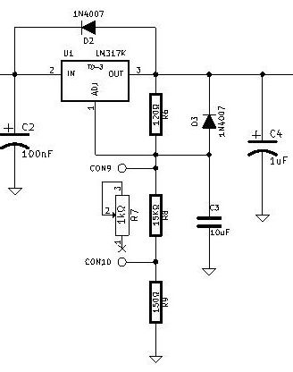
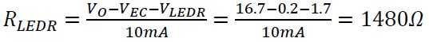
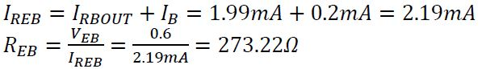

Di seguito si illustra il progetto di un alimentatore stabilizzato. Che serve a trasformare una tensione alternata di 18V in una tensione continua variabile da 3V a 12V con 1A di corrente massima. La tensione è regolata tramite un potenziometro ed un regolatore LM317K. Il circuito contiene due led uno verde ed uno rosso, che segnalano rispettivamente la presenza di tensione e il raggiungimento della corrente massima fornibile.
Lo scopo del progetto è di realizzare un circuito in grado di acquisire una tensione di 18V alternati e di fornire in uscita una tensione continua e aventi le seguenti specifiche:
Viene utilizzato un trasformatore esterno al circuito che trasforma la tensione di rete di 230V AC in 18V AC che verranno utilizzati dal circuito. Un ponte di diodi KBL05 utilizzato come raddrizzatore trasforma le semionde negative in positive per ottenere la tensione continua. Un condensatore da 4.7uF viene utilizzato come filtro che stabilizza il segnale. Il led rosso segnala che si sta richiedendo la corrente massima. Il Regolatore LM317K regola e stabilizza meglio la tensione da 3V a 12V al variare del valore del potenziometro. Il led verde segnala la presenza di tensione.
Di seguito si mostra lo schema a blocchi del circuito:
Però, nel circuito realizzato non sarà presente il trasformatore.
Il ponte di diodi non fa altro che prendere in ingresso un segnale sinusoidale alternato e dare in uscita un segnale con le semionde negative trasformate in positive.
Infatti sia nella fase della semionda positiva che in quella negativa la corrente sul carico scorre nello stesso verso. Grazie al condensatore si ottiene una forma d’onda simile al dente di sega semplificando i calcoli.
Per segnalare la presenza di tensione è stato posto un led, con opportuna resistenza, ai capi del condensatore. La caduta di tensione sul led verde è di 2.1V quindi il led si accenderà a circa questa tensione.
Se la corrente in entrata raggiunge il valore di quella massima il transistor entra in conduzione facendo accendere il led rosso. Quindi per alte correnti come quella richiesta(1 A) si dovrà utilizzare una resistenza (R2) da 5W.
Il regolatore fornisce in uscita una tensione di forma d’onda idealmente lineare, regolabile tramite la variazione della resistenza del potenziometro. E stata usata la configurazione proposta dal datasheet, al posto di una resistenza normale tra ADJ e GND è stato usato un potenziometro, appunto per far regolare all’utilizzatore la tensione di uscita.

Condensatore:
Pero si deve tenere conto dell’errore del 20% presente nella serie E6:
E’ stato scelto un condensatore da 4.7uF.
Ponte di diodi:
La corrente media sui diodi:
La tensione inversa:
E’ stato scelto un ponte KBL005.
Segnalazione presenza di tensione:
E stata scelta una resistenza da 1.5kΩ.
Segnalazione Overload:
Led Rosso:
E stata scelta una resistenza da 1.5kΩ.
Segnalazione Overload:
E’ stata una resistenza da scelta 270Ω.

E’ stata scelta 0.2mA.
E’ stata scelta 500Ω.
Trasformatore:

E’ stata scelto un trasformatore da 18V 50VA.
Stabilizzatore:
Partendo dalla formula fornita dal datasheet:
E’ stata scelta una resistenza da 120Ω.
Però non è possibile trovare un potenziometro da 1022Ω. Quindi è stata messa una resistenza in serie ed una in parallelo al potenziometro:
E’ stata scelta una resistenza in parallelo di 15kΩ.
Dissipatore:
Lista dei componenti utilizzati per realizzare il progetto:
Finito il progetto sono state effettuare delle misure di tensione al variare della richiesta di corrente per ricavare le caratteristiche di uscita e la resistenza del circuito.
La prima serie di misure è stata effettuata impostando come tensione di uscita quella minima, ovvero 3V. Come si può vedere dalla tabella e dal grafico la tensione in uscita è abbastanza stabile, infatti si ha una caduta di soli 29mV chiedendo 1A.
La seconda serie di misure è stata effettuata impostando come tensione di uscita una tensione intermedia, pari a 7,5V. In questo caso la caduta di tensione è di 22mV.
L’ultima serie di misure è stata effettuata impostando la tensione di uscita alla tensione massima, pari a 12V. La caduta di tensione in questo caso è di 33mV.
Come si vede dai grafici il coefficiente angolare indica la resistenza del circuito, che è molto bassa, il valore oscilla tra i 21.9mΩ e 32.9mΩ. Quindi nonostante molte scelte siano state condizionate dai componenti in possesso dal magazzino scolastico, l’alimentatore rispetta le specifiche di progetto.
{kind=link}
{kind=link}
{kind=link}
{kind=link}
{kind=link}